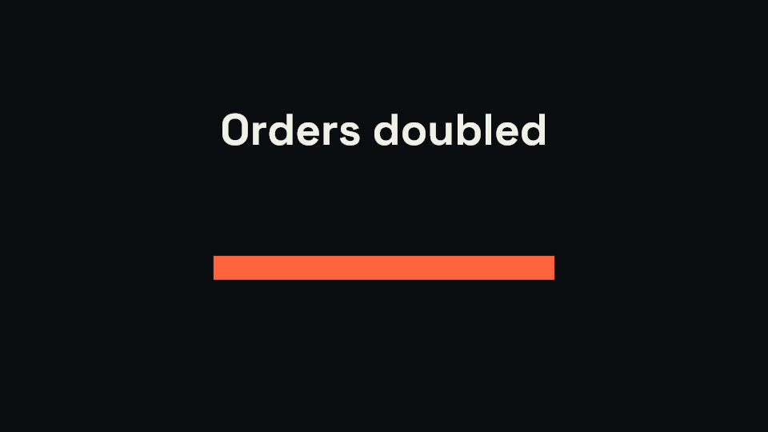
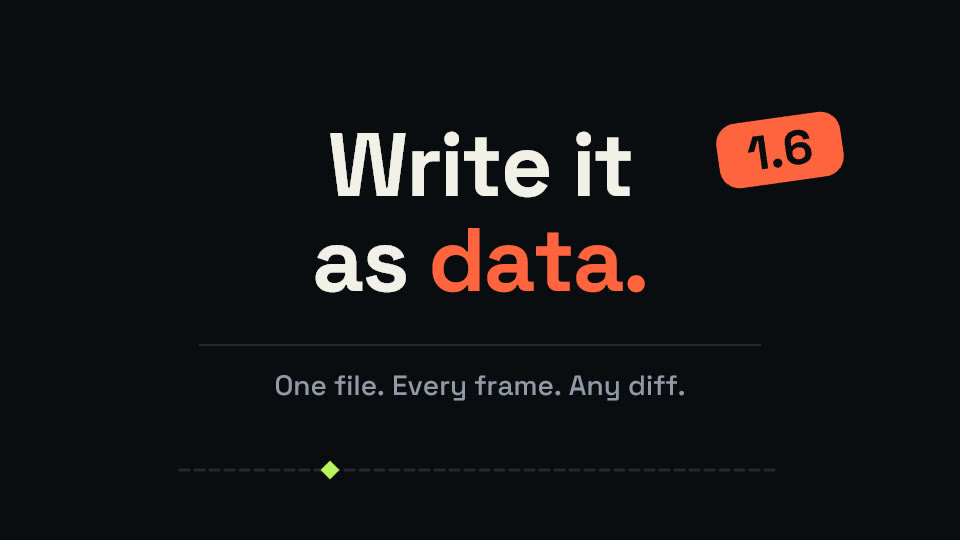
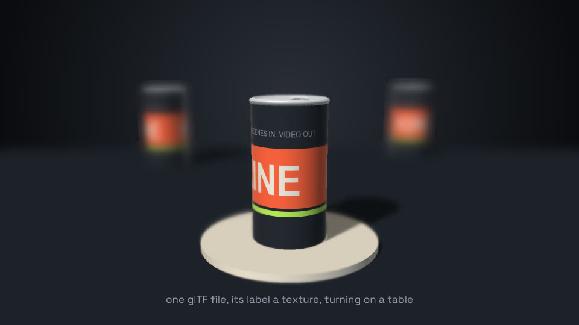
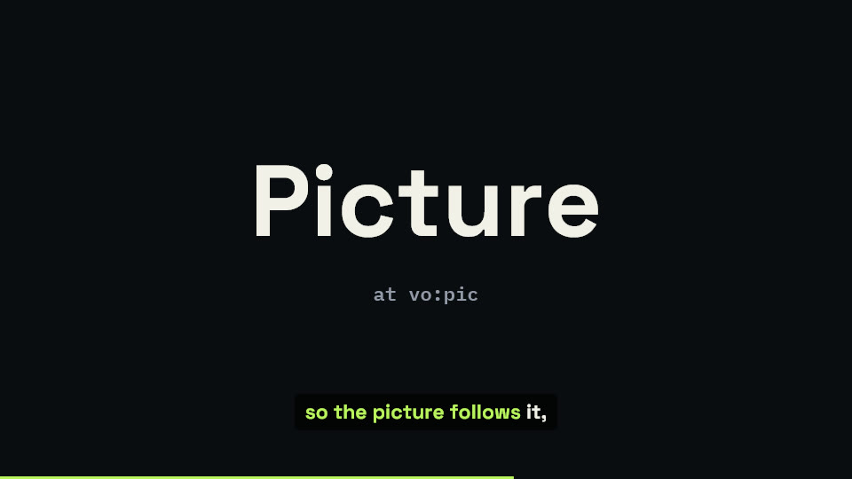
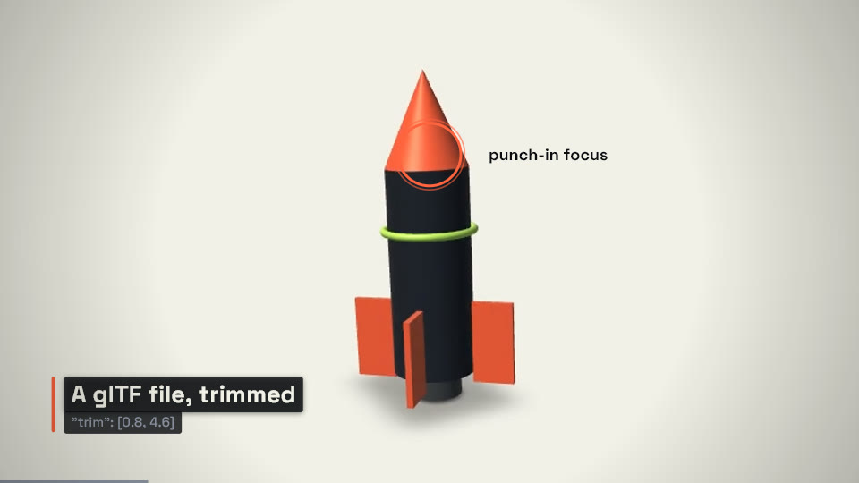
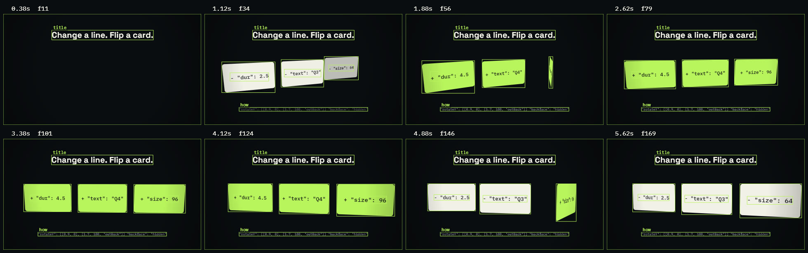
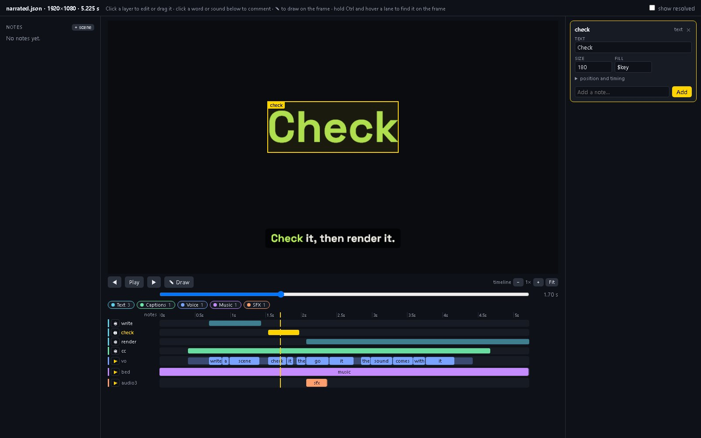
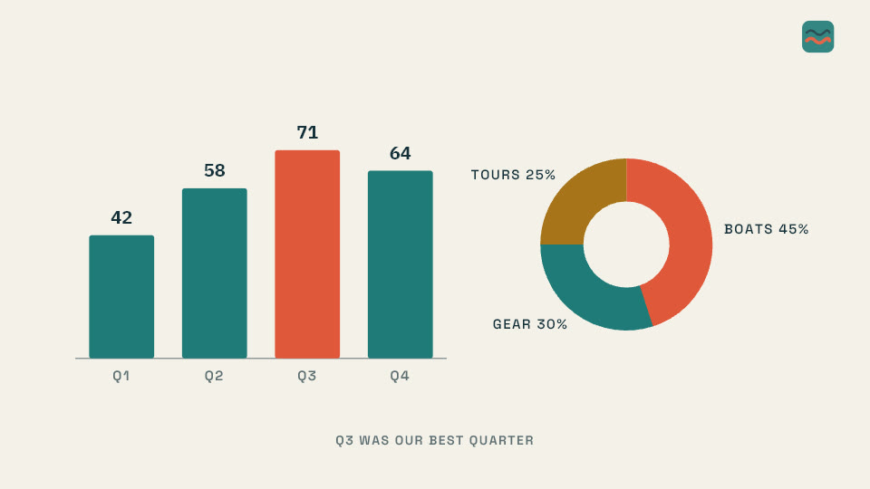
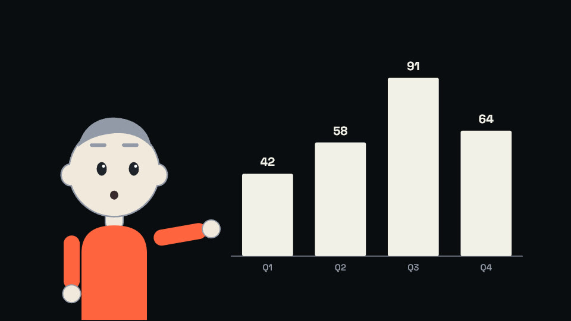

Video you can diff.
Kinescript turns a JSON scene into video. Every layer, keyframe, cut and sound is a line of data, so a scene can be generated, reviewed in a pull request and changed by an agent, then checked and rendered from the command line. A voice-over can start as a line of text.
pip install kinescript
Python 3.10+ and ffmpeg
- bg
- s1
- s2
- s3
- s4
- s5
- s6
- wipes
- cc
- vo1
- vo2
- vo3
- vo4
- vo5
- vo6
- bed
marketing/hero.json. Its six lines of voice-over were written as text and spoken by kine voice; each section starts on its line, and the clips, code and effects inside it start on the words. At 1080p it renders with its sound in about 5.3 seconds on the development machine; this copy is 1280x720. The bars under it are the scene's top-level layers and its sounds as kine probe reports them, with a dot where each child layer starts and each word is said.What it does.
Each page shows a feature with the videos Kinescript rendered and the scene files they came from.

TimingTime is a referenceLayers start on other layers, words and markers, so a change moves everything cued after it.
2DPaths, masks and morphsMotion along paths, masks, morphing shapes, kinetic type, particles and charts.
3DDepth on any layerA camera, lit models, cutaways, guided tours, extruded text and glTF files.
SoundA voice from a line of textVoice-over spoken from the scene's text, words that cue the picture, and a levelled mix.
EditsCuts, transitions and captionsA cut list of trimmed clips, transitions in one word, and captions timed in the scene.
AgentsChecked without watchingContact sheets, a list of problems and every layer's box, for an agent that cannot watch.
EditorReview it on the frameA browser page where a person points at what is wrong and the agent reads it as notes.
BrandsOne brand, every videoColours, fonts, logos, an intro and outro and sound defaults, defined once.
AvatarsCharacters that talkA drawn or 3D character whose mouth follows the voice, and who smiles, points and looks where you say.
Fast on a GPU.
Skia draws on the GPU through a hidden OpenGL context, one per worker. Frames are split into chunks, encoded in parallel and joined without re-encoding, while another ffmpeg process mixes the audio.
- 2.0 msmedian to draw one 1080p frame of the launch video and read it back
- 290frames per second, rendering the launch video at 1080p with audio
- 3Python dependencies: skia-python, numpy and glfw, plus ffmpeg
Measured on an Intel Core Ultra 7 265 with an NVIDIA RTX 5060 Ti, Windows 11, on 2026-10-31. Without a GPU, Kinescript falls back to Skia's CPU rasteriser, which is much slower; the README has the numbers.
Start.
pip install kinescript
kine new scene.json
kine check scene.json
kine render scene.json -o scene.mp4Needs Python 3.10 or newer and ffmpeg. Install has the rest: kine doctor, the voice plugins, and the commands for a first scene.